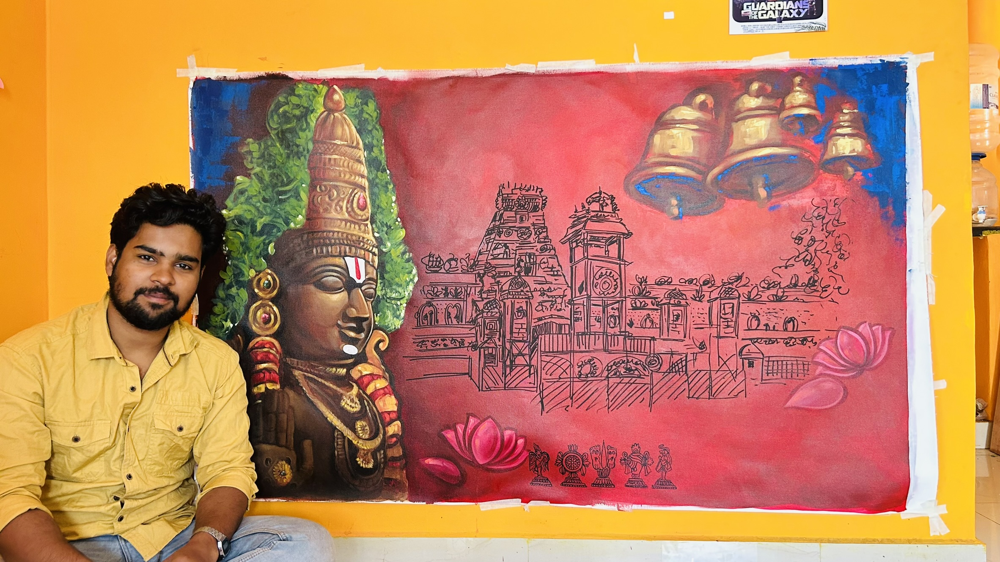
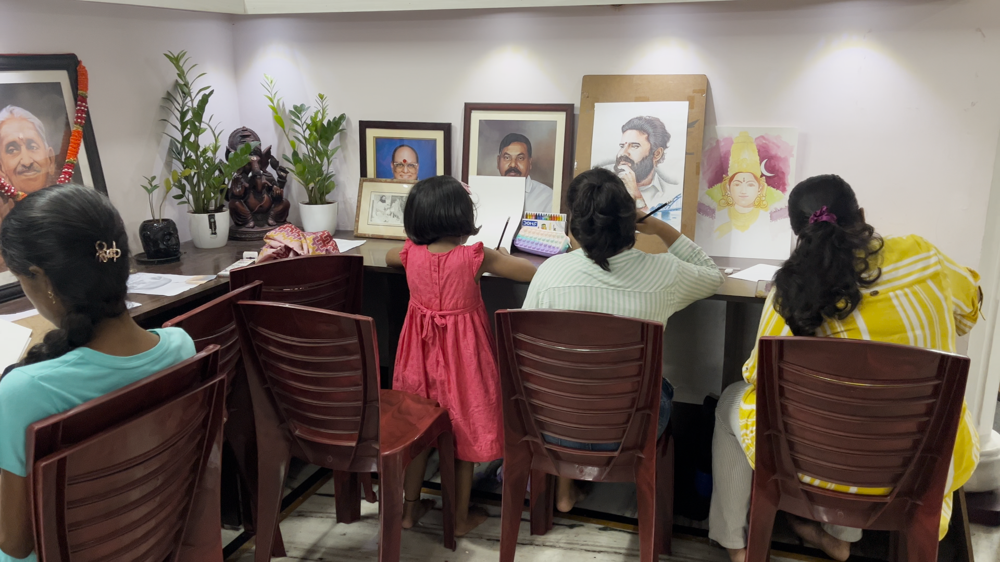

From a software engineer to a full-time artist and educator.

Hi, I’m Venky – an artist, muralist, software engineer, and founder of The Venky Art Academy. My passion for art ignited in childhood, where I was endlessly fascinated by how colors interact with light. From sketching vibrant scenes on the backs of school notebooks, this love has grown over the years into a lifelong calling that I now share through my online academy, helping children unlock and enhance their own artistic potential. Even as I built a career in Software Engineering, art remained my true sanctuary. I realized coding and art share the same essence: structure, patience, and the joy of debugging imperfections into something beautiful. This unique blend shapes every project I touch.
I specialize in transforming spaces with murals. I’ve turned plain walls in homes into dream worlds that capture families’ stories, moods, and personalities—from playful children’s rooms to inspiring living spaces. For restaurants, my murals enhance ambiance and productivity, using color, theme, and composition to create inviting, memorable environments that boost the overall experience for customers and staff.
I create bespoke portraits and commissions in pencil, color pencil, traditional paint, and digital art. Each piece starts with deep listening to the client’s vision, focusing on capturing not just likeness, but emotion, expression, and personality. From heartfelt gifts to themed illustrations, I’ve fulfilled countless requirements, delivering artworks that clients cherish for milestones and memories.
My deepest drive is transferring this childhood spark to young artists at The Venky Art Academy. Through structured online classes across drawing, painting, and mixed media—from Junior levels to Advanced mastery—I guide children to build confidence, imagination, and skill. No prior talent needed; just curiosity. I’ve seen kids evolve from hesitant sketches to bold masterpieces, and nothing fulfills me more than empowering them to achieve artistic excellence.
My engineering background ensures a professional process: Careful listening to ideas and expectations,Studying spaces, lighting, and references upfront,Detailed planning of concepts, colors, and composition,Iterative refinement for perfect alignment Whether murals, portraits, or teaching, I create art that’s meaningful, enduring, and story-driven—bridging my worlds to inspire others.

The Venky Art Academy was born from my lifelong passion for art, starting with childhood sketches on notebook backs and evolving into a mission to make creativity accessible to all. I founded it to prove that art isn't art a gift for the "talented few" it is a learnable skill that unlocks joy, confidence, and expression for everyone. Today, we have empowered over 100+ students, from eager 5-year-olds to busy working professionals, through our vibrant online platform. Our mission is To democratize art by dismantling barriers like self-doubt and lack of access. We believe every person harbors an artist within, waiting for the right guidance to emerge. Through structured, inclusive programs, we foster lifelong creativity, helping students transform hesitation into mastery and ideas into masterpieces. We serve a diverse community of learners of all ages and skill levels, from young children aged five and above who are just sparking their imagination with their first strokes, to teens building portfolios for school, hobbies, or future creative careers, and adults who are rediscovering the joy of art alongside work and life responsibilities. No prior experience is required, as we welcome complete beginners and support intermediate learners in reaching new heights within a warm, encouraging environment focused on personal growth. Our teaching follows a comprehensive and progressive six-level curriculum, from Junior to Advanced, covering essential mediums and techniques such as drawing and sketching with pencil shading, hatching, blending, proportions, perspective, gesture drawing, dynamic compositions, portrait sketching, still life, and imaginative character design. Students also explore painting through watercolors for fluid and luminous effects, acrylics and oils for bold textures, layering, and color harmony, along with mixed media experiments that blend paints, inks, and collages. Specialized learning includes digital illustration using tablets and software, color theory, light and shadow interplay, advanced visual effects, and creative crafts such as mandalas, pop art, and thematic storytelling, all reinforced through live classes, homework challenges, and project showcases for hands-on mastery.
Our approach blends passion with precision, led by my engineering-structured mindset and artistic heart, supported by an energetic and skilled team of instructors. We emphasize fun and engagement through interactive live sessions, games, and themed challenges, while encouraging expression and critical thinking by exploring bold ideas, constructive feedback, and the reasoning behind techniques. Technology and art come together through our custom report system, which generates monthly monitored progress reports in detailed PDFs that track skills, improvements, milestones, and personalized goals, giving parents clear insights through modern dashboards. With small group classes ensuring individual attention, learning becomes a joyful collaboration. Our promise is that by joining us, students—whether children or adults—gain confident self-expression, meaningful enjoyment, and sharper critical thinking skills that extend beyond the canvas, supported by decades of passion, a collaborative teaching team, proven results through student showcases, and over 100+ success stories that demonstrate visible progress and lasting confidence.
Today, I have taught over 100+ students, ranging from 5-year-olds to working professionals. My curriculum covers everything from Pencil Shading to Digital Illustration.
View My Classes